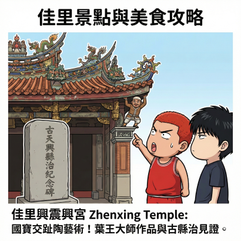
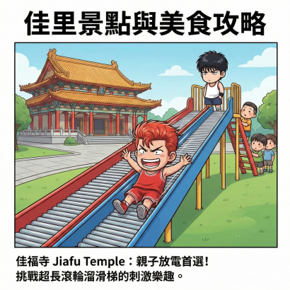
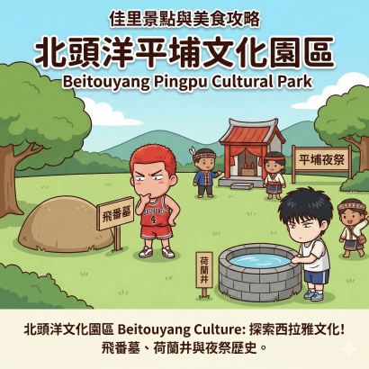
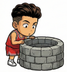
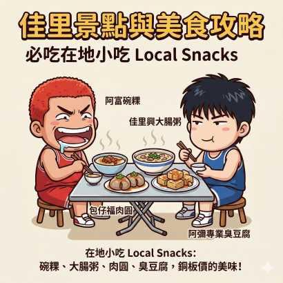
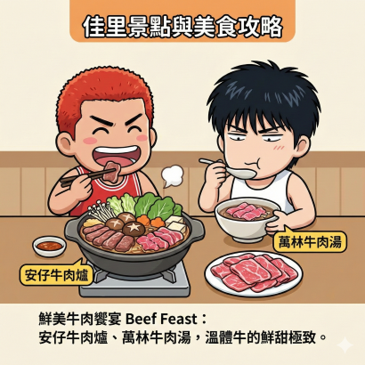
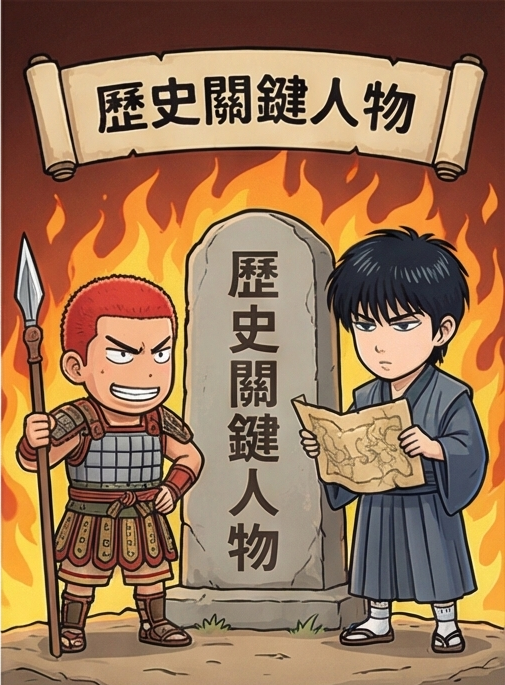

JIALI DISTRICT : TRAVEL, FOOD & LEGENDS

三級古蹟！看那個「憨番扛廟角」的交趾陶，表情生動得像在防守一樣！

全台少見有遊樂園的寺廟！挑戰 60 公尺滾輪溜滑梯，速度感十足。


探索西拉雅文化！飛番墓與荷蘭井，見證歷史的軌跡。

阿富碗粿、佳里興大腸粥、包仔福肉圓。先發五人名單等級的美味！

安仔牛肉爐、萬林牛肉湯。溫體牛的鮮嫩口感，喝一口湯就像投進壓哨球！
松玫冰果室雪淇冰、鬍鬚大雞排、週四夜市。最佳賽後補給品！
點擊查看「北門七子」！這是一群用筆戰鬥的醫生與詩人，台灣文壇的傳奇隊伍。
點擊查看！出身佳里的政壇重量級人物與地方仕紳。

點擊查看！從明鄭將軍到抗日義士，守護這塊土地的熱血靈魂。
身分：醫師、作家、政治家
鹽分地帶精神領袖！左手聽診器右手筆。
身分：詩人
被譽為「世紀之詩」的創作者，描寫沿海生活最動人。
身分：小說家、評論家
戰後文壇的傳承者，提攜後進不遺餘力。
身分：詩人
作品充滿濃厚的鄉土情懷與人道關懷。
身分：作家
擅長描寫農村與底層社會的真實面貌。
身分：詩人
早期鹽分地帶的重要詩人之一，風格清新。
身分：劇作家、作家
不僅寫詩與小說，在戲劇劇本上也有卓越貢獻。
經歷：台南縣長、省議會議長
佳里番子寮出身，台灣政壇的重量級人物，影響力深遠。
經歷：前佳里鎮長
對佳里早期建設有重大貢獻的地方父母官。
年代：1895年 (乙未戰爭)
無名英雄們！為了保衛家鄉，展現出寧死不屈的防守精神。
年代：明鄭時期
鄭成功的部將，率軍在佳里興屯墾，是佳里早期開發的關鍵人物。